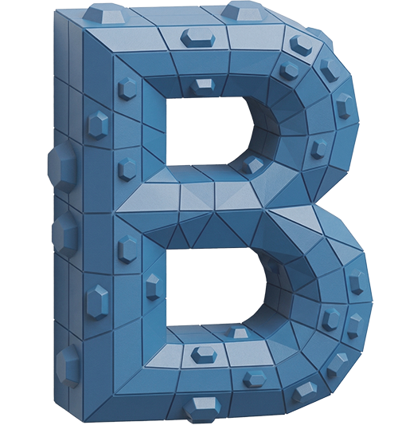

Drop an .stl, .obj, .3mf or .step file here
or
Support this tool? Shop at CNCKitchen.STORE or send a tip via PayPal / Ko-fi

BumpMesh by CNC KitchenDrop an .stl, .obj, .3mf or .step file here
or
CNC Kitchen
Stefan Hermann
Bahnhofstr. 2
88145 Hergatz
Germany
Email: contact@cnckitchen.com
Phone: +49 175 2011824
The phone number is for legal/business inquiries only — not for support.
EU Online Dispute Resolution platform: https://ec.europa.eu/consumers/odr
Responsible party (Verantwortlicher gem. Art. 4 Abs. 7 DSGVO): Stefan Hermann, Bahnhofstr. 2, 88145 Hergatz, Germany.
This tool is provided completely free by CNC Kitchen.
While your STL is being processed, why not check out the store that helps us keep making cool stuff for you?
Add a texture to any of your STLs — directly in your browser, no cloud and completely free!